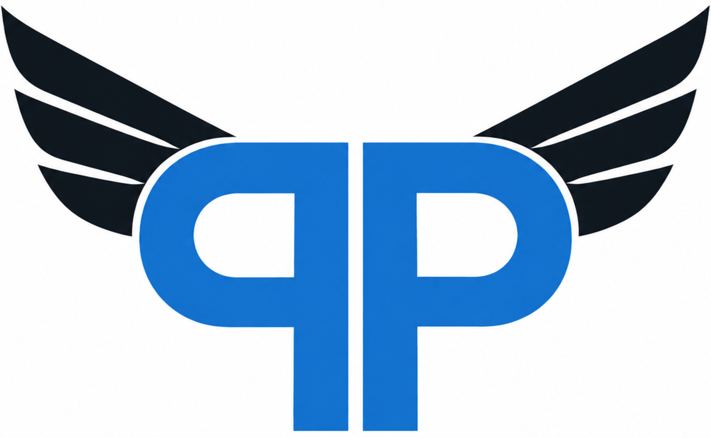

TEMPERATURE
—°C
Feels like —

Choose your location to see today's riding conditions.
Use your location or search for a city to get a clear riding recommendation.
We'll find your best time to ride.
Feels like —
Chance this hour
Gusts —
Waiting for forecast
Your hourly riding outlook will appear here.
PushRide is a conservative weather guide, not a road-safety guarantee. It weighs rain, temperature, wind, gusts, visibility and daylight to produce a simple riding suggestion.
Ride means the forecast meets our preferred conditions: no rain expected, rain chance below 30%, temperature between 8–32°C, wind below 25 km/h, gusts below 40 km/h and visibility of at least 5 km during daylight.
Don’t ride flags conditions that can make riding especially hazardous: thunderstorms, snow or freezing precipitation, temperature at or below 3°C, rain of at least 1 mm/h, wind at least 35 km/h, gusts at least 50 km/h or visibility below 1 km.
Conditions between these ranges show Caution. Check current road conditions, local alerts and your motorcycle before heading out. Ride only when you judge it safe.
Ride decision disclaimer. PushRide provides an AI-generated suggestion based on available weather data. Forecasts and recommendations may be incomplete, delayed or incorrect. This app is not a safety guarantee or a substitute for your own judgment. Check current road conditions, local alerts and your motorcycle’s readiness before riding. Ride only when you feel it is safe, and ride responsibly. Ride safe.